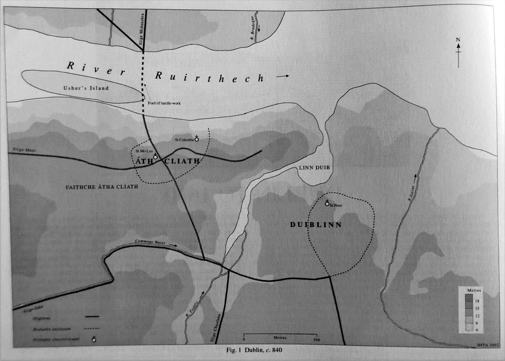
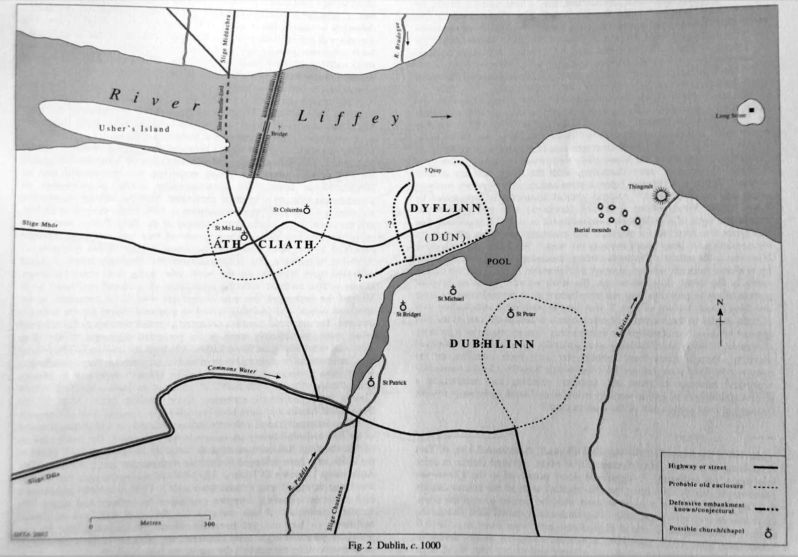
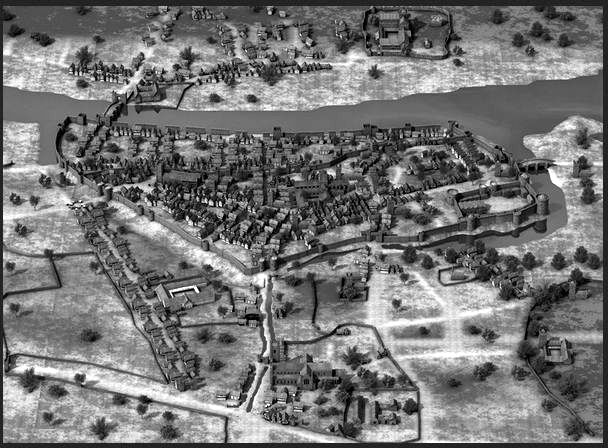

History · c. 840 onwards
At the heart of Dublin
Drinking water, defence and power for the medieval city.
At the heart of Dublin
The modest Poddle is the most historic river in Dublin. The clue is in the name: Dubh Linn, the black pool, was a pool on the stream just outside where Dublin Castle now stands.
It was the city’s main source of drinking water, because the Liffey is tidal and brackish. It formed part of the city’s defences: Dame Street, one of the city’s main streets, is said to be named after the dam that turned the stream into a moat. And it powered the mills of the city’s industries and religious houses.


